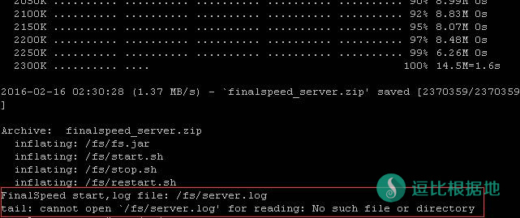

FinalSpeed已经停止更新和下载/安装，下面教程和文件都已经失效，所以请换其他的加速方法吧！
Finalspeed前身是XSocks，是一个加速+SOCKS5代理的软件，起初是付费的，用户很少，试用步骤麻烦，所以也没人什么人买，于是作者就想了一个方法。
先把XSocks改一个名字：“Finalspeed”，然后改一下功能和界面，因为怕喝茶去掉了SOCKS5代理功能，然后做成免费的，开始宣传！
然后因为加速暴力，于是使用人数发展很快，一直到前段时间，使用人数足够了，于是就可以收割了。
把名字重新改回到“XSocks”，并且功能改一改，吹一吹稳定性更好，加速更吊，就开始卖了，因为很多小白盲目的相信，就去入坑买了。
注意问题
- 服务器建议512M以上内存搭建。
- openvz架构只支持udp协议。
Tip：建议使用512M内存以上的KVM VPS，可让加速达到最佳效果，512M内存以下的在大流量的情况下可能出现程序崩溃的问题！一般情况下，两个人同时使用就负荷了，不要太多人用。
FinalSpeed的客户端使用教程可以看这里：FinalSpeed客户端使用教程及介绍
实测搬瓦工VPS也是可用的，最少256M内存的安装！
下载地址：
密码: 9hyn
服务端说明：
- Windows版服务端运行需要java环境和winpcap。
- Windows版配置文件位于cnf目录下，参数和linux版一样，但是需要在cnf目录下手动新建/编辑文件，文件名为listen_port,password，文件内容为设置值，password可增加多行，代表多个密码。
- FinalSpeed服务端Linux版，支持Centos,Ubuntu,Debian。
Linux版服务端安装教程
不会链接VPS的，你需要看着个：Linux SSH链接工具 Putty 新手详细使用教程
服务端会启动iptables，如果服务器修改过ssh端口，请先开放ssh端口，否则可能导致ssh连接失败。（如果是默认的22端口，请跳过这个步骤！）
开放端口命令
service iptables start iptables -A INPUT -p tcp --dport 你的vps端口号 -j ACCEPT iptables -A OUTPUT -p tcp --sport 你的vps端口号 -j ACCEPT service iptables save
这个步骤一般情况下可以忽略，不太清楚情况的，就不要输入了。
一键安装
rm -f install_fs.sh wget http://fs.d1sm.net/finalspeed/install_fs.sh chmod +x install_fs.sh ./install_fs.sh 2>&1 | tee install.log
debian,ubuntu下如果执行脚本出错,请切换到dash， 切换方法: sudo dpkg-reconfigure dash 选no
安装完后就会出现下图情况，默认安装完就会启动的（红框），不需要再输入启动代码了！

更新
执行一键安装会自动完成更新。
卸载
sh /fs/stop.sh ; rm -rf /fs
启动
sh /fs/start.sh
停止
sh /fs/stop.sh
重新启动
sh /fs/restart.sh
日志
tail -f /fs/server.log
设置服务端口（一般不需要做）
默认udp150和tcp150，由于finalspeed的工作原理,请不要在本机防火墙开放finalspeed所使用的tcp端口。
mkdir -p /fs/cnf/ ; echo 端口号 > /fs/cnf/listen_port ; sh /fs/restart.sh
设置开机启动（可选）
设置/etc/rc.local文件权限，并打开该文件。
chmod +x /etc/rc.local vi /etc/rc.local
按I键后加入下面的一行代码（不懂vi操作的请看这个：Linux中VIM编辑器的真 · 简单使用教程），然后按ESC键退出vi编辑模式，然后输入:wq保存并退出该文件。
sh /fs/start.sh
如果需要每天定时重启，可以这样子设置。比如：每天晚上3点自动重启
打开定时任务设置。
crontab -e
按I键后加入下面一行代码（不懂vi操作的请看这个：Linux中VIM编辑器的真 · 简单使用教程），然后按ESC键退出vi编辑模式，然后输入:wq保存并退出该文件。
0 3 * * * sh /fs/restart.sh
crontab使用方法简单解释一下。
添加的命令需要一行一个，格式是分钟(0-59) 小时(0-23) 日期(1-31) 月份(1-12) 星期(0-7) 要执行的命令
如果要做成每三天的11点59分重启一下，就看下面这个代码（“*/”代表“每”）
59 11 */3 * * sh /fs/restart.sh
注意：日期中，如果某月没有31日，就不会执行；星期中，0和7都代表星期日；如果不需要设置值的请用“*”；所有数值都需要是整数！
转载请超链接注明：逗比根据地 » 高速双边加速软件，为Shadowsocks加速——FinalSpeed（服务端教程）
责任声明：本站一切资源仅用作交流学习，请勿用作商业或违法行为！如造成任何后果，本站概不负责！